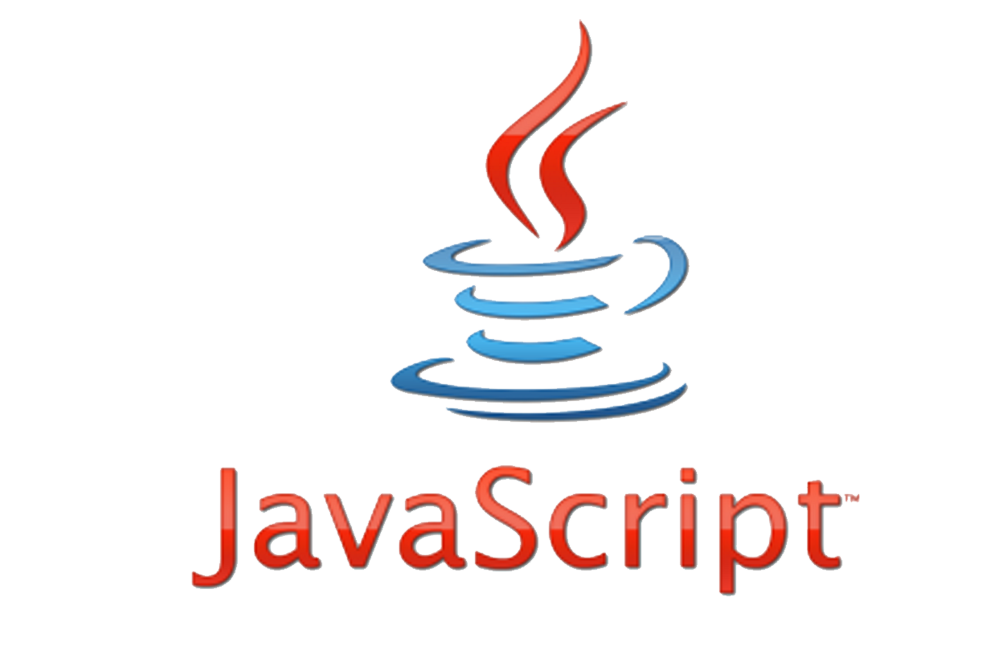

История создания
JavaScript был создан Бренданом Эйхом за 10 дней в мае 1995 года. Изначально язык назывался Mocha, затем был переименован в LiveScript, и наконец стал называться JavaScript. Несмотря на схожесть названий, JavaScript не является прямым потомком языка Java - имя было выбрано в маркетинговых целях, так как Java был очень популярен в то время.
| Год | Версия | Основные изменения |
|---|---|---|
| 1995 | JavaScript 1.0 | Первый релиз |
| 1997 | ECMAScript 1 | Первая стандартизация |
| 2015 | ECMAScript 6 | Классы, стрелочные функции, промисы |
| 2023 | ECMAScript 2023 | Современные возможности |
Краткий обзор
JavaScript - это мультипарадигменный язык программирования, поддерживающий объектно-ориентированный, императивный и функциональный стили. Является основным языком для веб-разработки, позволяющим создавать интерактивные веб-страницы.
Основные преимущества:
- Универсальность и гибкость
- Огромная экосистема npm
- Поддержка всеми браузерами
- Асинхронное программирование
- Активное сообщество
Области применения:
- Фронтенд-разработка
- Серверная разработка (Node.js)
- Мобильная разработка (React Native)
- Десктопные приложения (Electron)
- Игровая разработка
Примеры кода

// Современный JavaScript
const greeting = (name) => {
return `Привет, ${name}!`;
};
class User {
constructor(name) {
this.name = name;
}
sayHello() {
console.log(greeting(this.name));
}
}
// Асинхронный код
async function fetchData() {
try {
const response = await fetch('api/data');
const data = await response.json();
return data;
} catch (error) {
console.error('Ошибка:', error);
}
}